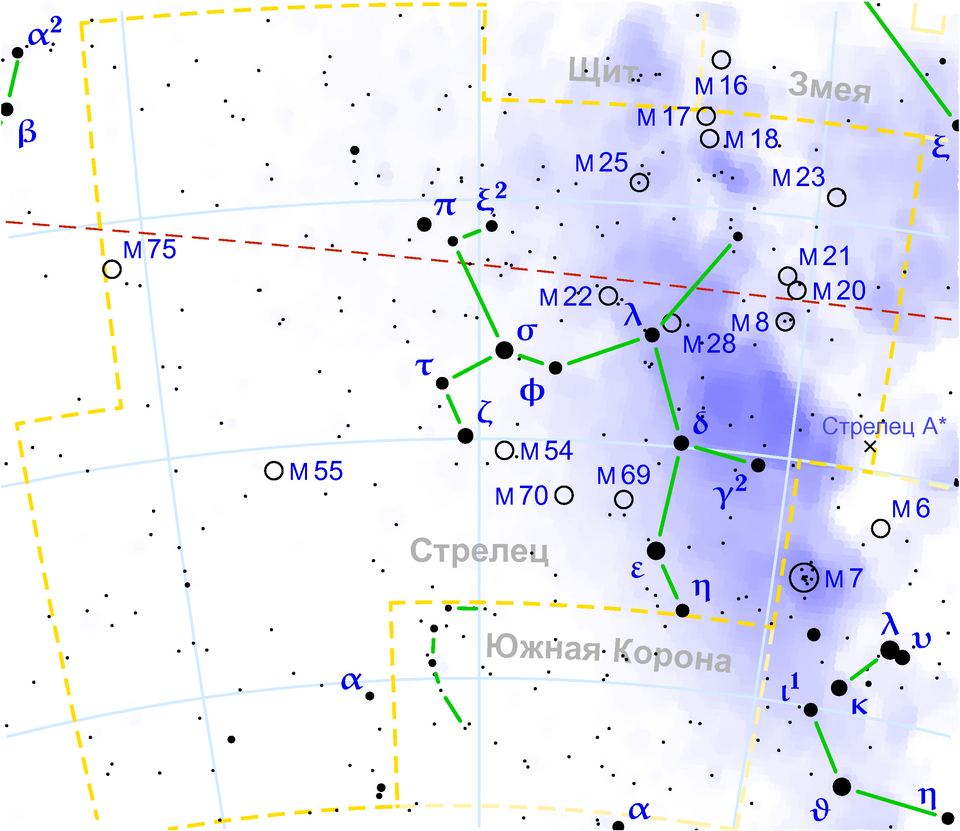

Yay burcu özellikleri: tarihleri, elementi ve uyumu

Görsel: Sagittarius constellation map ru lite · Anton Gutsunaev · Public domain · Wikimedia Commons
Yay, tropik zodyakta kış gündönümünden önceki son burçtur ve sembolü yayını germiş bir okçudur. Bu sayfada tarih ve element bilgisinin yanında, Yay takımyıldızının galaksimizin merkezine bakan konumu da anlatılıyor.
Yay burcu hangi tarihler arasında, elementi ne?
Geleneksel tropik zodyakta Yay, 22 Kasım – 21 Aralık arasına düşer. Sınır günlerde tarih bir gün kayabilir; Güneş'in burçlar arasındaki geçiş anı her yıl aynı saate gelmediği için 21-22 Kasım ya da 21-22 Aralık'ta doğanlar için doğum saati belirleyici olur.
Yay'ın elementi ateş, niteliği değişkendir. Değişken burçlar mevsimin kapanışında yer alır ve astrolojide uyum sağlama, yön değiştirme temalarıyla anılır. Yönetici gezegen Jüpiter, sembol ise yay geren okçudur; çoğu tasvirde at gövdeli bir kentaur olarak çizilir.
Yay takımyıldızı gökyüzünde nerede, kökeni ne?
Yay takımyıldızı güney gökyüzünde, kabaca 19 saat sağ açıklık ve eksi 25 derece dik açıklıkta durur. Türkiye'den yaz gecelerinde güney ufkuna yakın görülür. Kent ışığından uzakta bakıldığında Samanyolu şeridi tam bu bölgede belirginleşir, çünkü bakış yönümüz galaksinin iç kısmına düşer.
Galaksimizin merkezi bu yöndedir. Merkezdeki güçlü radyo kaynağına Sagittarius A* adı verilir ve süper kütleli bir kara delikle ilişkilendirilir. Kuzey yarımkürede takımyıldızın parlak yıldızları, gökyüzü meraklılarının Çaydanlık dediği tanınır bir şekil oluşturur.
Kökeni Mezopotamya'ya uzanır; Sümer-Babil geleneğinde bu bölge, ok atan bir figür olan Pabilsag adıyla anılır. Yunan anlatısında okçu kimi kaynakta kentaur Kheiron ile, kimi kaynakta ise okçuluğu bulduğu söylenen Pan'ın oğlu Krotos ile eşleştirilir. En parlak yıldızı Kaus Australis, yani yayın güney kısmıdır.
Yay burcuna astrolojide hangi özellikler atfedilir?
Astrolojide Yay'a merak, açık sözlülük ve hareket isteği atfedilir. Geleneksel yorumda bu burcun insanları uzun uzun plan yapmak yerine yeni deneyim arayan, sıkıldığında yön değiştiren, sorulmadan da fikrini söyleyen kişiler olarak anlatılır. Bunlar burca atfedilen tanımlardır.
Zorlanılan yanlar olarak sabırsızlık, ayrıntıyı atlama ve taşıyabileceğinden fazlasını üstlenme geçer. Aynı yorumda, dürüstlüğün bazen fazla doğrudan bir üsluba dönüşebileceği söylenir. Bu anlatım bir yorum geleneğidir; kimsenin davranışını önceden belirlemez.
İş hayatında Yay ile ilişkilendirilen alanlar eğitim, yayıncılık, turizm, hukuk, spor ve yurt dışıyla çalışan işlerdir. Jüpiter bağlantısı nedeniyle öğretme, anlatma ve büyütme gerektiren roller geleneksel yorumda bu burca yakın sayılır.
Yay hangi burçlarla uyumlu sayılır?
Geleneksel uyum yorumunda Yay; ateş grubundan Koç ve Aslan ile, hava grubundan Terazi ve Kova ile rahat kabul edilir. İkizler karşıt burcudur ve bu eksen öğrenme ile anlatma, ayrıntı ile bütün arasındaki fark üzerinden okunur.
İlişkilerde Yay'a alan isteği, doğrudan konuşma ve birlikte hareket etme arzusu atfedilir. Doğum tarihi kolayca doğrulanabilen Yay örnekleri: Walt Disney (5 Aralık 1901), Taylor Swift (13 Aralık 1989) ve Sertab Erener (4 Aralık 1964).
Son bir not: astroloji kişiliği ölçmez; bu sayfa kültürel bir merakı karşılamak ve keyifle okunmak için hazırlandı.
Takip etmek için
- Karşıt burç İkizler'in sayfasını okuyup iki burca atfedilen eğilimleri karşılaştırın
- Akrep sayfasındaki Yılancı bölümünden takımyıldız sınırlarının nasıl çizildiğini öğrenin
- Oğlak sayfasından kış gündönümünün gökyüzünde nasıl kaydığını okuyun
Sık sorulan sorular
Yay burcu 21 Kasım'da mı başlar, 22 Kasım'da mı?
Çoğu yıl 22 Kasım'da. Güneş'in Akrep'ten Yay'a geçiş anı yıldan yıla birkaç saat oynadığı için sınır günlerde tarih kayabilir; kesin yanıt doğum saatiyle birlikte hesaplanır.
Samanyolu'nun merkezi gerçekten Yay yönünde mi?
Evet, bu astronomik bir bulgudur. Galaksimizin merkezi Yay takımyıldızı doğrultusundadır ve oradaki Sagittarius A* kaynağı süper kütleli bir kara delikle ilişkilendirilir. Burcun astrolojik yorumuyla bir ilgisi yoktur.
Yay ile İkizler ilişkisi neden zor sayılır?
Geleneksel yorumda karşıt burçlar hem çeker hem zorlar. Yay bütünü ve uzağı, İkizler ayrıntıyı ve yakını temsil ettiği için bu eksen gerilimli okunur. Bu bir ölçüm değil, yerleşik bir yorumdur.
Olgular şu yayıncıların haberlerinden derlendi: Wikipedia – Sagittarius (constellation), Ian Ridpath, Star Tales – Sagittarius, Wikipedia – Sagittarius A*, Wikipedia – Sertab Erener, Walt Disney, Taylor Swift. Metnin tamamı TrendSaphiens tarafından yazıldı; kaynaklarla kelime örtüşmesi %0.0 (eşik %5). Kaynaklarda olmayan bilgi eklenmedi.